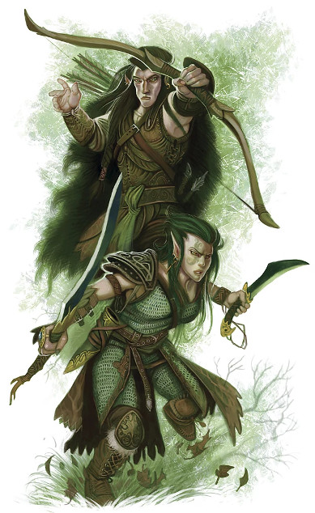
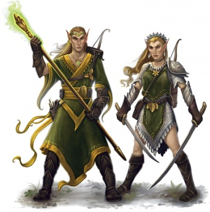
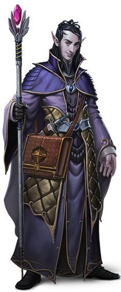

Culture elfique
Toutes les légendes s'accordent pour dire que les premiers elfes proviennent du sang versé par leur dieu Corellon lors de son combat contre le dieu orc Gruumsh. Voyons plus en détail qui ils sont.
Les étapes de la vie
Les elfes ont les espérances de vie connues les plus longues. Pouvant atteindre plus de 700 ans, leur longévité dépasse celle de la plupart des arbres et ils vivent assez longtemps pour voir les changements que le monde subit. Une génération d'elfes peut, en effet, voir l'ascension et la chute d'un puissant empire humain, la naissance et la mort d'une forêt, ou bien encore l'érosion graduelle d'une montagne. Ceci leur donne une vision du monde et du temps différente de celle des humains, parfois difficile à comprendre pour ces derniers.
Les elfes ne ressentent pas non plus les effets de l'âge comme les humains. Une fois sa croissance terminée, un elfe cesse de changer ou, du moins, le changement devient alors très lent. Il n'y a que de petites différences entre un elfe de 100 ans et un autre de 300 ans, différences qui se traduisent seulement par un peu plus d'exubérance, de spontanéité et d'enthousiasme chez le plus jeune. C'est seulement après 400 ans que les elfes commencent peu à peu à montrer leurs années, et encore, à cet âge ils apparaissent toujours aussi jeunes qu'un humain de 30 ans.
Enfance
Les elfes atteignent la maturité physique à peu près au même âge que les humains, mais ils sont considérés comme des enfants jusqu'à approximativement 25-35 ans. Pendant cette étape de leur vie ils apprennent ce que signifie être un elfe ainsi que les principes fondamentaux du tir à l'arc et du maniement de l'épée. Les naissances chez les elfes étant plutôt rares, notons ici qu'il est habituel que des frères et sœurs soient séparés de plusieurs dizaines d'années.
Adolescence
L'adolescence est pour un elfe l'âge des premières responsabilités. L'individu doit se concentrer sur l'acquisition du savoir et des connaissances qui lui seront nécessaires lorsqu'il sera adulte. C'est aussi pendant l'adolescence que les vieux elfes enseignent aux plus jeunes comment jouir de la vie sans succomber à l'ennui durant les longues années qu'ils ont devant eux. Ceci est très important, car ceux qui ne sont pas préparés à cela peuvent devenir fous ou suicidaires. La fin de cette période correspond à leur intégration dans la société elfique et fait l'objet d'une célébration.
Âge adulte
LA RÊVERIE
À la différence de nombreuses autres races, les elfes n'ont pas besoin de dormir, bien qu'ils puissent le faire s'ils le désirent. Au lieu de cela, pour se reposer, ils pratiquent la rêverie. Quand les elfes entrent dans cet état, ils revivent leurs souvenirs passés, qu'ils soient agréables ou pénibles car, à l'instar du rêve des humains, les elfes n'ont aucun contrôle sur les souvenirs qui vont leur revenir. Ces rêveries sont même parfois prémonitoires.
Lorsqu'ils pratiquent la rêverie, les elfes ne ferment généralement pas les yeux, mais entrent dans une sorte de transe. Ils relâchent entièrement leur corps, jusqu'à ce que leurs muscles perdent toute rigidité et que leur esprit soit totalement calme et tranquille. Leur regard devient alors lointain, comme s'ils voyaient un autre lieu ou une autre époque. Ils restent toutefois conscients de leur environnement. Bousculer un elfe à ce moment équivaut à tirer un humain de son sommeil. Cette transe dure en moyenne 4 heures, et est équivalente en termes de repos à 8 heures de sommeil pour un humain.
Bien que la rêverie permette avant tout au corps de se reposer, cet acte sert également aux elfes de devoir de mémoire et les aident à maintenir leur identité. En effet, la longévité d'un elfe est si grande qu'il a besoin de se rappeler périodiquement tous les événements qu'il a vécus dans sa longue vie et qui font partie intégrante de sa personnalité.
Quand les elfes atteignent 100 ans, ils sont considérés comme adultes. Ils sont alors pleinement libres de leur choix. C'est d'ailleurs à cet âge que beaucoup d'elfes commencent à partir à l'aventure. Libres de suivre leur propre voie, ils abandonnent pour un temps leur place dans la société afin de satisfaire leur immense curiosité de l'univers. Mais ceux qui partent ainsi ne sont pas mis au ban de la société par leurs paires. Au contraire, c'est plutôt ceux qui restent qui ressentent de temps en temps un peu de regret d'avoir choisi de rester.
Vers 400 ans, les elfes atteignent l'âge mûr. Physiquement ils ne sont pas encore vieux, mais ils commencent maintenant à ressentir le poids des années passées. Quelques rides commencent à apparaître sur leur visage et leur condition physique se détériore un petit peu, l'endurance surtout. Ils ralentissent leur rythme et deviennent un peu plus vulnérables à la maladie. Leur connaissance et leur sagesse ne cessent de croître par contre.
Âge des aînés
À un moment de sa vie, les rêveries d'un elfe (voir encadré) changent. Les souvenirs qui lui remontent ne semblent plus être les siens mais ceux d'une autre vie. Cette étape est désignée sous le nom de la Révélation et l'elfe gagne alors le droit d'être désigné par le terme d'aîné. Cela apparait généralement aux alentours de leurs 400 ans, voire quelques décades plus tôt pour ceux qui ont eu une vie très remplie.
La grande majorité d'entre-eux perd alors l'intérêt pour le monde extérieur et arrêtent de partir à l'aventure après des siècles consacrés à chasser les trésors et la renommée. Les elfes à cet âge connaissent leurs limites et ont l'intelligence de ne pas aller au-delà de celles-ci. Ils mènent alors une vie tranquille, jouent de la musique, chantent et écoutent les autres faire de même. Les magiciens prennent leur retraite pour se consacrer aux études magiques à plein temps, les guerriers entraînent les plus jeunes, les roublards établissent leurs propres guildes et les bardes s'assoient dans les rayons de lumière du soleil pour composer des chansons. Toutefois certains ne cesseront jamais de braver les dangers ; c'est de ces elfes-là que parlent les légendes, ceux qui ont fait dans leur vie ce qu'ils devaient, pas ce qu'ils voulaient.
Puis un jour, fatalement, de nombreux elfes ressentent le besoin pour leur corps et leur esprit de quelque chose de plus approprié au silence et à la vie contemplative à laquelle ils aspirent à un âge avancé. C'est l'appel de l'Éternelle Rencontre qui se fait sentir, une irrésistible envie de faire un dernier voyage vers cette île lointaine à l'ouest de la Mer Inviolée, paradis elfe réputé faire partie du royaume divin d'Arvandor, en laissant leur communauté dans les mains capables de leurs successeurs. Aucun elfe, au moment de partir pour l'Éternelle Rencontre, ne le fait sans éprouver un certain regret de quitter son monde, mais une fois sur l'île aucun n'a regretté d'avoir fait le voyage.
Caractère
La clé de la compréhension de l'esprit elfe est dans l'entendement du nombre d'années qu'ils vont vivre.
Par-dessus tout, les elfes sont patients. Ils ont des années pour achever n'importe quelle tâche et n'ont donc aucune objection à attendre. L'impatience est d'ailleurs pour eux considérée comme un vice. Ce sont également des esprits astucieux, qui ont eu des années pour exercer leurs compétences et aiguiser leur esprit. Ils sont toujours en quête de nouvelles expériences afin d'assouvir leur curiosité et leur enthousiasme.
Les elfes n'ont aussi que peu d'affection pour les sociétés structurées ; ils préfèrent s'attacher aux besoins de l'individu. Rien n'est aussi important aux yeux d'un elfe que les sensations et les besoins de l'individu. Mais ceci ne veut pas dire que les besoins d'un seul elfe comptent plus que ceux des autres elfes. Simplement, la majorité des lois ou coutumes elfes sont adaptées de manière à ce que chaque elfe puisse réussir à être aussi heureux qu'il le souhaite. Par exemple, un elfe n'interfère pas dans la vie des autres elfes, chacun est ou doit être capable de régler ses problèmes personnels. Un elfe peut bien sûr douter du choix que fait un autre elfe, mais il n'interviendra pas pour le convaincre de changer d'avis, car le libre arbitre est une notion très importante chez les elfes. Si tout ceci fonctionne, c'est aussi parce que les elfes ne sont pas intrinsèquement égoïstes et n'hésitent pas à mettre le besoin des autres avant le leur, reconnaissant que sans les autres la vie a moins de sens. Et, bien que très individualistes, ils ont un fort sens du devoir envers leur famille. En règle générale, la plupart des elfes défendent donc la cause de l'individu, pour le bien. Ils croient en un individu fort qui rendra le monde autour de lui meilleur, et pensent que cela est bien mieux que de bâtir une société faible où tout le monde doit faire la même chose de la même manière.
LANGUES ET NOMS
La langue elfique est mélodique, fluide, mais complexe dans sa structure. Cette complexité s'étend même jusqu'au choix du nom des enfants. En effet, bien que beaucoup se ressemblent, chaque nom elfe est unique. Il n'existe pas deux elfes ayant le même nom, les elfes étant beaucoup trop individualistes pour s'abaisser à partager un nom.
D'autres parts, certains considèrent les elfes comme des créatures très émotives et conduites par les caprices du moment, ou les voient comme des êtres qui ne font rien sans considérer en premier lieu quels avantages personnels ils pourraient en tirer. La réalité est entre les deux, ou les deux à la fois. En fait les elfes considèrent simplement que l'émotion (que les humains ou les nains ont tant de mal à ressentir) représente la moitié de la vie d'un être. Ceux qui n'agissent que par logique, qui sont sans pitié, négligent donc la moitié de leur vie. D'un autre côté, les elfes prennent bien garde à ce que leurs émotions ne dirigent pas leur vie, car ils en connaissent les dangers. C'est donc autour de cet équilibre que les elfes oscillent, quotidiennement, souvent incompris des autres races.
Notons aussi que chez les elfes, il n'y a aucune discrimination fondée sur le sexe. La moitié des légendes relatent les exploits de héros féminins, et historiquement il y a eu plus de reines que de rois dans la société elfe. Et nous terminerons ce chapitre en disant que pour un elfe, la valeur sentimentale et historique qu'il attache ou donne à un objet surpasse de très loin sa valeur monétaire.
La mort
Contrairement à beaucoup d'autres races, les elfes essaient d'éviter la violence et n'ont pas peur de la mort. Beau paradoxe ? En fait leur longévité fait qu'ils respectent totalement le cycle de la vie et acceptent sans aucun problème la mort naturelle. Mais ils redoutent la mort accidentelle, celle qui met fin de manière précaire à la longue existence qui est promise aux elfes. Un crime par exemple sera punit en exilant le coupable, en l'obligeant à verser une forte somme à la famille du défunt, ou bien encore en le condamnant à terminer une tache initiée par la victime, plutôt que par son exécution qui ne serait qu'une basse vengeance.
L'alimentation
La préférence des elfes va clairement vers les mets et les vins délicats. Les nourritures lourdes, telles la viande de bœuf ou le pain grossier, affligent l'estomac des elfes, alors que les humains trouvent eux les repas des elfes trop légers et les portions pas assez grandes. Les elfes ont de plus tendance à être végétariens car cela réduit l'impact sur leur environnement. Ce n'est donc pas une surprise de savoir qu'ils n'élèvent quasiment pas d'animaux et ne possèdent pas de troupeaux. Mais outre cette raison « écologique », cela s'explique également par le fait qu'aucun elfe ne conçoit de passer sa vie à regarder des animaux manger toute la journée. Les elfes laissent aussi la culture aux humains, les fruits de la forêt leur suffisent. Pour la boisson, les elfes affectionnent l'eau fraîche des montagnes ainsi que le miel fermenté, une boisson alcoolisée qui donne à leur palais une sensation agréable. Leur boisson préférée reste toutefois la feywine, un nectar de jus de fleurs mélangé avec du miel et à un ingrédient secret supplémentaire. Cette boisson ne se conserve par contre pas bien, c'est pourquoi les elfes n'en emportent jamais en voyage.
La musique
Le chant et la danse jouent un rôle important dans la vie quotidienne d'un elfe, car cela leur sert d'évasion à leurs siècles d'existence. L'elfe qui ne maîtrise pas un instrument ou qui ne montre pas d'aptitude à la danse est rare, et pourrait bien être soupçonné d'être émotionnellement retardé. La musique des elfes est incroyablement complexe, ce qui en fait un véritable art et explique pourquoi elle est très rarement jouée par des non-elfes. Les chansons mélancoliques sont généralement interprétées a cappella et la peine qu'elles expriment hante souvent les auditeurs pour les semaines voire les mois qui suivent.

La magie
La magie est partie intégrante de la vie des elfes et les fascine. La compréhension de ces elfes qui ont consacré leur vie à l'étude de cet art surpasse allègrement celle des plus grands magiciens humains. Les armes et les objets magiques elfes sont d'ailleurs certainement parmi les plus puissants au monde. Les elfes ont par contre une aversion pour la technologie non magique, et n'ont aucune inclination pour l'invention. Les historiens expliquent cela par le fait que, il y a très longtemps, les inventeurs elfes ont massivement rejoint les rangs de la Reine Araignée. Depuis cette époque, la plupart des elfes sont méfiants envers les inventeurs et les inventions.
Les rites
Les elfes célèbrent quantité de choses pour alléger le poids des années à passer. Tant que les autres races, particulièrement les nains, en concluent parfois que les elfes ne font rien d'autre de leur vie qu'organiser des réjouissances. La plupart de ces festivités sont simples, mais il existe aussi des moments où les elfes ressentent le besoin de cérémonies plus formelles et plus sérieuses. Les principaux événements fêtés sont :
Naissance. Les enfants elfes sont bien moins nombreux que les enfants humains.
Âge adulte. Célébré dans nombre de cultures, pas uniquement chez les elfes.
Mariage. Entre elfes il dure jusqu'à ce qu'un partenaire meure ; le divorce ou la séparation ne se conçoivent pas.
Retraite. Le départ vers l'Éternelle Rencontre.
Serment du sang. Cérémonie avant d'engager une vendetta pour venger un proche.
Funérailles. Les elfes considèrent le corps comme une simple enveloppe et la mort signifie simplement que la force de la vie en est partie.
Traduit par blueace